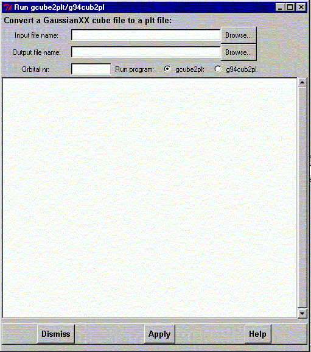

**************************************************************************
Run gCube2plt program widget
Leif Laaksonen CSC 1999
**************************************************************************
Run one of the two available programs to convert the Cube output from the GaussianXX program into the plt file format used by gOpenMol.
The programs available are:

Line command: there is no line command available inside gOpenMol. Use Unix/Dos shell line commands.
**************************************************************************
LUL/1999
**************************************************************************